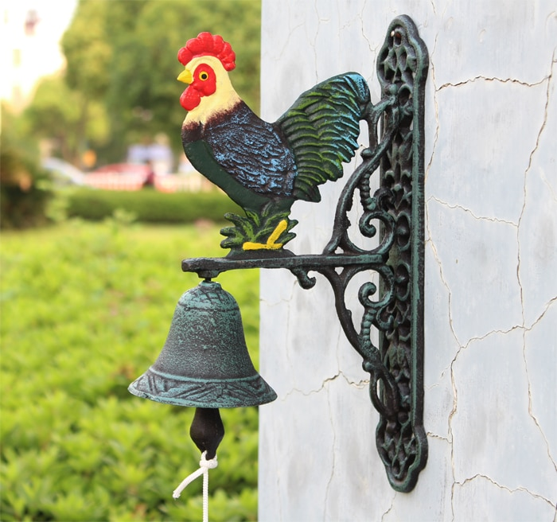

Prieškambario spintos - Lenkijosbaldai24.lt
2020.10.29 07:48
Skip to content DIRBAME NUO 1999 m. PRISTATOME BALDUS VISOJE LIETUVOJE Kontaktai Prisijungti / Registruotis Menu +370 656 88181 Kontaktai PRISIJUNGTI 0 €
Krepšelyje nėra produktų.
+370 656 88181 0 €Krepšelyje nėra produktų.
Virtuvė Kolekcijos Virtuvės Standart Virtuvės Comfort Virtuvės Modern Virtuvės priedai Valgomojo kolekcijos Virtuvės komplektai Virtuvės stalai Virtuvės mediniai stalai Virtuvės stikliniai stalai Virtuvės kėdės Virtuvės metalinės kėdės Virtuvės medinės kėdės Virtuvės baro kėdės Virtuvės valgomojo kėdės Svetainė Kolekcijos Svetainės sekcijos Svetainės sekcijos Comfort Svetainės sekcijos Premium Svetainės provanso stiliaus baldai Svetainės vitrinos Svetainės komodos Svetainės knygų spintos Svetainės komplektai Svetainės spintos klasikinės Svetainės lentynos Svetainės pakabinamos lentynėlės Svetainės stalai Svetainės išskleidžiami stalai Svetainės kėdės Svetainės kavos staliukai Svetainės TV staliukai Svetainės žurnaliniai staliukai Minkšti baldai Kolekcijos Minkštų baldų komplektai Minkšti kampai Sofos Minkšti odiniai baldai Foteliai Pufai Miegamasis Kolekcijos Miegamojo komplektai Miegamojo provanso stiliaus baldai Miegamojo lovos Miegamojo medinės lovos Miegamojo metalinės lovos Miegamojo dvigulės lovos Miegamojo viengulės lovos Miegamojo lovos Modern Miegamojo minkštasuoliai Miegamojo čiužiniai Miegamojo lovos grotelės Miegamojo spintos klasikinės Miegamojo spintos stumdomom durim Miegamojo pakabinamos spintelės / vitrinos Miegamojo naktinės spintelės Miegamojo tualetiniai staliukai Miegamojo lentynos Prieškambaris Kolekcijos Prieškambario komplektai Prieškambario spintos Prieškambario drabužių kabyklos Prieškambario suoliukai Prieškambario batų dėžės Vonia Kolekcijos Vonios komplektai Vonios praustuvės Vonios spintelės Vonios veidrodžiai Vaikų Kolekcijos Vaikų kambario baldų komplektai Vaikų kambario darbo stalai Vaikų kambario kėdės Vaikų kambario knygų lentynos Vaikų kambario lovos Vaikų kambario dvivietės lovos Vaikų kambario dviaukštės lovos Vaikų kambario trivietės lovos Vaikų kambario spintos Vaikų kambario spintelės Vaikų kambario komodos Vaikų kambario lentynos Biuras Biuro darbo stalai Biuro kėdės Biuro lentynos Biuro pakabinamos lentynėlės Lauko Lauko baldų komplektai Lauko stalai Lauko sofos ir kampai Lauko krėslai Lauko suoliukai Lauko gultai Lauko baldų aksesuarai Išpardavimas PAGAL KAINĄ Pagal pristatymo terminą 2-6 savaitės (2) 7 darbo dienos (118)Labai išradingas sprendimas yra pirkti spinta tai veiks kaip viršutinių drabužių ir batų laikymo vieta. Tačiau verta pažvelgti į drabužių spintelę su kita akimi, nes ji taip pat turi estetinę vertę. Platus dekorų iš tradicinių medžio drožlių vijerų su šiuolaikinėmis blizgančiomis versijomis danga mums suteiks daug vietos. Didžiulis pranašumas yra platus drabužių spintelių asortimentas, kuris leis mums pasirinkti tinkamą baldo plotą mūsų kambaryje. Jo paprastas dizainas suteiks erdvės salėje. Gera idėja yra nusipirkti veidrodinę spintelę.
1 2 3 Greita peržiūraPrieškambario spinta GS110594
174 € Į krepšelį 60 cm 194 cm 41 cm Visos kolekcijos prekės » GS110594 Greita peržiūraPrieškambario spinta GS112899
105 € Pasirinkite savybes 50 cm 195 cm 41 cm Visos kolekcijos prekės » GS112899 Greita peržiūraPrieškambario spinta GS113795
159 € Pasirinkite savybes 83 cm 190 cm 63 cm GS113795 Greita peržiūraPrieškambario spinta GS113869+
129 € Pasirinkite savybes 59 cm 213 cm 50 cm Visos kolekcijos prekės » GS113869 Greita peržiūraPrieškambario spinta GS113870
201 € Pasirinkite savybes 121 cm 190 cm 58 cm GS113870 Greita peržiūraPrieškambario spinta GS113871
194 € Pasirinkite savybes 121 cm 190 cm 58 cm GS113871 Greita peržiūraPrieškambario spinta GS114869 +
117 € Į krepšelį 49 cm 197 cm 44 cm Visos kolekcijos prekės » GS114869 Greita peržiūraPrieškambario spinta GS115785+
141 € Pasirinkite savybes 155 cm 190 cm 26 cm Visos kolekcijos prekės » GS115785 Greita peržiūraPrieškambario spinta GS115786
149 € Pasirinkite savybes 150 cm 190 cm 29 cm Visos kolekcijos prekės » GS115786 Greita peržiūraPrieškambario spinta GS115787
186 € Pasirinkite savybes 204 cm 180* cm 38 cm Visos kolekcijos prekės » GS115787 Greita peržiūraPrieškambario spinta GS115788
128 € Pasirinkite savybes 141 cm 187 cm 34 cm Visos kolekcijos prekės » GS115788 Greita peržiūraPrieškambario spinta GS115789
204 € Pasirinkite savybes 200 cm 200 cm 29 cm Visos kolekcijos prekės » GS115789 Greita peržiūraPrieškambario spinta GS115790
194 € Pasirinkite savybes 175 cm 190 cm 40 cm Visos kolekcijos prekės » GS115790 Greita peržiūraPrieškambario spinta GS115791
208 € Pasirinkite savybes 211 cm 198 cm 35 cm Visos kolekcijos prekės » GS115791 Greita peržiūraPrieškambario spinta GS115793
162 € Pasirinkite savybes 103 cm 200 cm 45 cm Visos kolekcijos prekės » GS115793 Greita peržiūraPrieškambario spinta GS115794
246 € Pasirinkite savybes 200 cm 198 cm 38 cm Visos kolekcijos prekės » GS115794 Greita peržiūraPrieškambario spinta GS115796
84 € Pasirinkite savybes 90 cm 190 cm 31 cm Visos kolekcijos prekės » GS115796 Greita peržiūraPrieškambario spinta GS115801
155 € Pasirinkite savybes 130 cm 190 cm 38 cm Visos kolekcijos prekės » GS115801 Greita peržiūraPrieškambario spinta GS115802
221 € Pasirinkite savybes 190 cm 190 cm 38 cm Visos kolekcijos prekės » GS115802 Greita peržiūraPrieškambario spinta GS115807
84 € Pasirinkite savybes 100 cm 190 cm 26 cm Visos kolekcijos prekės » GS115807 Greita peržiūraPrieškambario spinta GS115812
76 € Pasirinkite savybes 90 cm 190 cm 33 cm Visos kolekcijos prekės » GS115812 Greita peržiūraPrieškambario spinta GS115813
217 € Pasirinkite savybes 200 cm 198 cm 38 cm Visos kolekcijos prekės » GS115813 Greita peržiūraPrieškambario spinta GS115814+
203 € Pasirinkite savybes 110 cm 195 cm 41 cm Visos kolekcijos prekės » GS115814 Greita peržiūraPrieškambario spinta GS115816
153 € Pasirinkite savybes 100 cm 200 cm 38 cm Visos kolekcijos prekės » GS115816 Greita peržiūraPrieškambario spinta GS115819
132 € Pasirinkite savybes 91 cm 200 cm 29 cm Visos kolekcijos prekės » GS115819 Greita peržiūraPrieškambario spinta GS115817
124 € Pasirinkite savybes 100 cm 200 cm 38 cm Visos kolekcijos prekės » GS115817 Greita peržiūraPrieškambario spinta GS117519 +
78 € Į krepšelį 55 cm 198 cm 35 cm Visos kolekcijos prekės » GS117519 Greita peržiūraSpintelė su rūbų kabykla GS117523 +
52 € Į krepšelį 55 cm 198 cm 35 cm Visos kolekcijos prekės » GS117523 Greita peržiūraSpintelė su veidrodžiu GS117524
76 € Į krepšelį 55 cm 198 cm 35 cm Visos kolekcijos prekės » GS117524 Greita peržiūraPrieškambario spinta RW100178
150 € Pasirinkite savybes 95 cm 189 cm 39 cm Pristatymas: 2-6 sav. Visos kolekcijos prekės » RW100178 Greita peržiūraPrieškambario spinta RW100219
618 € Į krepšelį 201 cm 40 cm Visos kolekcijos prekės » RW100219 Greita peržiūraPrieškambario spinta RW100220
464 € Į krepšelį 201 cm 40 cm Visos kolekcijos prekės » RW100220 Greita peržiūraPrieškambario spinta RW100227.SSAND
187 € Į krepšelį 66 cm 201 cm 40 cm Pristatymas: 2-6 sav. Visos kolekcijos prekės » RW100227 Greita peržiūraDrabužių spinta Hill Range, 99x45x137cm, pušis, 2 durų
276 € Į krepšelį Nemokamas pristatymas Greitas pristatymas: 7 d.d. VD145452 Greita peržiūraDrabužių spinta Hill Range, balta, 99x45x137cm, pušis, 2 durų
276 € Į krepšelį Nemokamas pristatymas Greitas pristatymas: 7 d.d. VD145453 Greita peržiūraDrabužių spinta Hill Range, pilka, 99x45x137cm, pušis, 2 durų
265 € Į krepšelį Nemokamas pristatymas Greitas pristatymas: 7 d.d. VD145454 Greita peržiūraDrabužių spinta Hill Range, balta, 99x45x137cm, pušis, 2 durų
265 € Į krepšelį Nemokamas pristatymas Greitas pristatymas: 7 d.d. VD145455 Greita peržiūraDrabužių spinta Hill Range, 142x45x137cm, pušis, 3 durų
353 € Į krepšelį Nemokamas pristatymas Greitas pristatymas: 7 d.d. VD145456 Greita peržiūraDrabužių spinta Hill Range, balta, 142x45x137cm, pušis, 3 durų
353 € Į krepšelį Nemokamas pristatymas Greitas pristatymas: 7 d.d. VD145457 Greita peržiūraDrabužių spinta Hill Range, pilka, 142x45x137cm, pušis, 3 durų
353 € Į krepšelį Nemokamas pristatymas Greitas pristatymas: 7 d.d. VD145458 Greita peržiūraDrabužių spinta Hill Range, balta, 142x45x137cm, pušis, 3 durų
353 € Į krepšelį Nemokamas pristatymas Greitas pristatymas: 7 d.d. VD145459 Greita peržiūraDrabužių spinta, baltos spalvos, 90x52x200cm, MDP
216 € Į krepšelį Nemokamas pristatymas Greitas pristatymas: 7 d.d. VD143013 Greita peržiūraDrabužių spinta, betono pilkos spalvos, 90x52x200cm, MDP
211 € Į krepšelį Nemokamas pristatymas Greitas pristatymas: 7 d.d. VD143015 Greita peržiūraDrabužių spinta, baltos ir ažuolo spalvos, 90x52x200cm, MDP
212 € Į krepšelį Nemokamas pristatymas Greitas pristatymas: 7 d.d. VD143016 Greita peržiūraDrabužių spinta, baltos spalvos, 90x52x200cm, MDP, ypač blizgi
210 € Į krepšelį Nemokamas pristatymas Greitas pristatymas: 7 d.d. VD143017 Greita peržiūraDrabužių spinta Hill Range, 127x50x170cm, pušies masyvas
385 € Į krepšelį Nemokamas pristatymas Greitas pristatymas: 7 d.d. VD143973 Greita peržiūraFMD Spintelė su 2 durelėmis, baltos ir pilkos spalvos
105 € Į krepšelį Nemokamas pristatymas Greitas pristatymas: 7 d.d. VD144052 Greita peržiūraDrabužių spinta, pilkos sp., 79x40x170cm, audinys
79 € Į krepšelį Nemokamas pristatymas Greitas pristatymas: 7 d.d. VD144258 Greita peržiūraDrabužių spinta, baltos sp., 135x40x170cm, audinys
197 € Į krepšelį Nemokamas pristatymas Greitas pristatymas: 7 d.d. VD144259 Greita peržiūraDrabužių spinta, pilkos sp., 135x40x170cm, audinys
197 € Į krepšelį Nemokamas pristatymas Greitas pristatymas: 7 d.d. VD144260 Greita peržiūraDrabužių spinta, pilkos sp., 173x40x170cm, audinys
141 € Į krepšelį Nemokamas pristatymas Greitas pristatymas: 7 d.d. VD144261 Greita peržiūraDrabužių spinta Hill Range, balta, 127x50x170cm, pušies masyvas
369 € Į krepšelį Nemokamas pristatymas Greitas pristatymas: 7 d.d. VD144444 Greita peržiūraDrabužių spinta Hill Range, 89x50x170cm, pušies masyvas, 2 durų
248 € Į krepšelį Nemokamas pristatymas Greitas pristatymas: 7 d.d. VD144525 Greita peržiūraDrabužių spinta Hill Range, balta, 89x50x170cm, pušis, 2 durų
264 € Į krepšelį Nemokamas pristatymas Greitas pristatymas: 7 d.d. VD144526 Greita peržiūraDrabužių spinta Hill Range, balta, 89x50x170cm, pušis, 2 durų
258 € Į krepšelį Nemokamas pristatymas Greitas pristatymas: 7 d.d. VD144527 Greita peržiūraDrabužių spinta su 4 skyriais, juodos spalvos, 175x45x170 cm
52 € Į krepšelį Nemokamas pristatymas Greitas pristatymas: 7 d.d. VD121533 Greita peržiūraDrabužių spinta su 4 skyriais, rudos spalvos, 175x45x170 cm
49 € Į krepšelį Nemokamas pristatymas Greitas pristatymas: 7 d.d. VD121534 Greita peržiūraDrabužių spinta, ruda, 87x49x159cm, audinys
49 € Į krepšelį Nemokamas pristatymas Greitas pristatymas: 7 d.d. VD146194 Greita peržiūraDrabužių spinta, ruda, 75x50x160cm
30 € Į krepšelį Nemokamas pristatymas Greitas pristatymas: 7 d.d. VD137461 Greita peržiūraDrabužių spintos, 2vnt., rudos, 75x50x160cm
44 € Į krepšelį Nemokamas pristatymas Greitas pristatymas: 7 d.d. VD137465 1 2 3 Mano sąskaita Registruotis Mano paskyra Prekių krepšelis D.U.K. / Pagalba Informacija Kontaktai Apie mus Prekių grąžinimas Baldų montavimo paslauga Privatumo politika Katalogas svetainės baldai Virtuvės baldų spalvos Pirkimas Pristatymas Kaip pirkti išsimokėtinai? Apmokėjimo būdai Paslaugų tiekimo sąlygos Kaip pirkti? Kontaktai Telefonas: +370 656 88181 susisiekti - (darbo dienomis 9-18 val.)El. paštas: info@lenkijosbaldai24.lt
Elektrėnų g. 7 , Kaunas
Mūsų facebook puslapis čia » Copyright 2020 © Kopijuoti be UAB''KETORA'' sutikimo draudžiama Prisijungti Virtuvė Kolekcijos Virtuvės Standart Virtuvės Comfort Virtuvės Modern Virtuvės priedai Valgomojo kolekcijos
- Spintos stumdomomis durimis internetu | Baldai PL
- Miegamojo spintos Internetu pigiau Žema kaina | b-a.eu
- Baldurama – natūralios medinės miegamojo spintos internetu
- SPINTOS | Antiknews
- Spintos gera kaina ir nemokamu pristatymu | Baldai1.lt
- Spintos - Berry baldai
- SPINTOS - DAIKTŲ LAIKYMAS
- Spintos | balduturgus.lt
- Spinta-lova - Leojar.lt
- Spintos - Lenkijosbaldai24.lt
- Spintos stumdomomis durimis internetu | Baldai PL
Itin mėgstamos prieškambario spintos stumdomomis durimis, leidžiančios maksimaliai išnaudoti turimą vietą, o jeigu jos kambaryje dar mažiau – Jums pravers kampinė spinta. Miegamojo spintos dažniausiai būna gerokai didesnės, tačiau atsižvelgdami į savo lūkesčius ir kambario dydį, greitai surasite Jums tiksiantį baldą.
- Miegamojo spintos Internetu pigiau Žema kaina | b-a.eu
Labai išradingas sprendimas yra pirkti spinta tai veiks kaip viršutinių drabužių ir batų laikymo vieta. Tačiau verta pažvelgti į drabužių spintelę su kita akimi, nes ji taip pat turi estetinę vertę. Platus dekorų iš tradicinių medžio drožlių vijerų su šiuolaikinėmis blizgančiomis versijomis danga mums suteiks daug vietos.
- Baldurama – natūralios medinės miegamojo spintos internetu
Mūsų spintų asortimentą sudaro šimtai gaminių. Dėkojame šimtai brangiam klientui, jūs galite lengvai rasti tinkamą modelį, nepriklausomai nuo jūsų nustatytų reikalavimų. Kad pasirinkta spinta būtų visiškai patenkinta ir galėtų įvykdyti jam skirtą vaidmenį, reikia atsižvelgti į šiuos aspektus. Kambarys Kur bus baldai? Tai labai svarbus klausimas, nes ne kiekvienas ...
- SPINTOS | Antiknews
365 dienų grąžinimo garantija. Jei nesate 100% patenkinti savo kokybiška preke, ją galite grąžinti per 365 kalendorines dienas.
- Spintos gera kaina ir nemokamu pristatymu | Baldai1.lt
Raudonmedžio spinta 61x134x253 cm € 650.00; Rūbų spinta 66x229x196 cm € 499.00; Ąžuolinė spinta 59x130x196 cm € 380.00; Art deco knygų spinta 45x112x190 cm € 299.00; Art deco spinta 41x120x175 cm € 380.00; Sekreteras – knygų spinta 48x100x188 cm € 420.00; Art Deco indauja 40x114x192 cm € 320.00; Ąžuolinė spinta ...
- Spintos - Berry baldai
Spinta 203806 597 € Spalva: Antracitas, Balta, Wotan ąžuolas + balta, +1
- SPINTOS - DAIKTŲ LAIKYMAS
Mėnesio pasiūlymas SPINTOS Pagaminsim ir sumontuosim spintą, kuri racionaliai išnaudos bet kokį kambario plotą, tad net mažiausia niša gali tapti naujais Jūsų daiktų namais. Daugiau DRABUŽINĖ Reikalinga drabužinė? Mielai padėsime ją susiprojektuoti kuo patogiau ir talpiau. Daugiau Pertvaros Panaudojant stumdomų durų sistemas galima atitverti praktiškai bet kokią ervę ...
- Spintos | balduturgus.lt
PATIKIMAS PRISTATYMAS. Užsisakykite iš elektroninės parduotuvės 24/7. PIRKIMAS IŠSIMOKĖTINAI. Įsigyk dabar, mokėk vėliau. REGISTRUOKITĖS. Užsiprenumeruokite mūsų naujienlaiškį ir gaukite 7€ nuolaidą pirmam apsipirkimui
- Spinta-lova - Leojar.lt
Miegamojo spinta dažytu paviršiumi gali atrodyti labai šviežiai ir patraukliai. Tokia apdaila – labai universali, nes ją lengva derinti beveik bet kokioje aplinkoje. Jei mėgstate dažnai atnaujinti savo miegamąjį, ypač keisti sienų spalvas, rinkitės baltą spintą – ji puikiai derės bet kokios spalvos interjere.
- Spintos - Lenkijosbaldai24.lt
Miegamajame stovinti spinta, ko gero, bus daugiausia skirta drabužiams susidėti. Tuo atveju, jei miegamuoju su niekuo nesidalinate, gali užtekti ir nedidelio baldo. Vėliau prireikus šalia galite sumontuoti ir lentyną, komodą. Jei įrengiate vaikų miegamąjį arba turite antrąją pusę, suprantama, kad prireiks gilesnio, talpesnio baldo.
Itin mėgstamos prieškambario spintos stumdomomis durimis, leidžiančios maksimaliai išnaudoti turimą vietą, o jeigu jos kambaryje dar mažiau – Jums pravers kampinė spinta. Miegamojo spintos dažniausiai būna gerokai didesnės, tačiau atsižvelgdami į savo lūkesčius ir kambario dydį, greitai surasite Jums tiksiantį baldą.
Labai išradingas sprendimas yra pirkti spinta tai veiks kaip viršutinių drabužių ir batų laikymo vieta. Tačiau verta pažvelgti į drabužių spintelę su kita akimi, nes ji taip pat turi estetinę vertę. Platus dekorų iš tradicinių medžio drožlių vijerų su šiuolaikinėmis blizgančiomis versijomis danga mums suteiks daug vietos.
Mūsų spintų asortimentą sudaro šimtai gaminių. Dėkojame šimtai brangiam klientui, jūs galite lengvai rasti tinkamą modelį, nepriklausomai nuo jūsų nustatytų reikalavimų. Kad pasirinkta spinta būtų visiškai patenkinta ir galėtų įvykdyti jam skirtą vaidmenį, reikia atsižvelgti į šiuos aspektus. Kambarys Kur bus baldai? Tai labai svarbus klausimas, nes ne kiekvienas ...
365 dienų grąžinimo garantija. Jei nesate 100% patenkinti savo kokybiška preke, ją galite grąžinti per 365 kalendorines dienas.
Raudonmedžio spinta 61x134x253 cm € 650.00; Rūbų spinta 66x229x196 cm € 499.00; Ąžuolinė spinta 59x130x196 cm € 380.00; Art deco knygų spinta 45x112x190 cm € 299.00; Art deco spinta 41x120x175 cm € 380.00; Sekreteras – knygų spinta 48x100x188 cm € 420.00; Art Deco indauja 40x114x192 cm € 320.00; Ąžuolinė spinta ...
Spinta 203806 597 € Spalva: Antracitas, Balta, Wotan ąžuolas + balta, +1
Mėnesio pasiūlymas SPINTOS Pagaminsim ir sumontuosim spintą, kuri racionaliai išnaudos bet kokį kambario plotą, tad net mažiausia niša gali tapti naujais Jūsų daiktų namais. Daugiau DRABUŽINĖ Reikalinga drabužinė? Mielai padėsime ją susiprojektuoti kuo patogiau ir talpiau. Daugiau Pertvaros Panaudojant stumdomų durų sistemas galima atitverti praktiškai bet kokią ervę ...
PATIKIMAS PRISTATYMAS. Užsisakykite iš elektroninės parduotuvės 24/7. PIRKIMAS IŠSIMOKĖTINAI. Įsigyk dabar, mokėk vėliau. REGISTRUOKITĖS. Užsiprenumeruokite mūsų naujienlaiškį ir gaukite 7€ nuolaidą pirmam apsipirkimui
Miegamojo spinta dažytu paviršiumi gali atrodyti labai šviežiai ir patraukliai. Tokia apdaila – labai universali, nes ją lengva derinti beveik bet kokioje aplinkoje. Jei mėgstate dažnai atnaujinti savo miegamąjį, ypač keisti sienų spalvas, rinkitės baltą spintą – ji puikiai derės bet kokios spalvos interjere.
Miegamajame stovinti spinta, ko gero, bus daugiausia skirta drabužiams susidėti. Tuo atveju, jei miegamuoju su niekuo nesidalinate, gali užtekti ir nedidelio baldo. Vėliau prireikus šalia galite sumontuoti ir lentyną, komodą. Jei įrengiate vaikų miegamąjį arba turite antrąją pusę, suprantama, kad prireiks gilesnio, talpesnio baldo.
